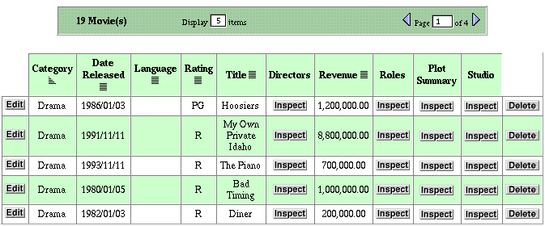
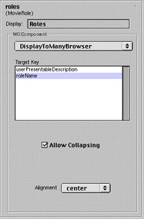
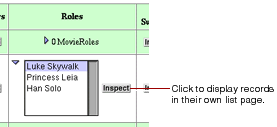
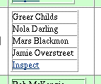

Table of Contents
Table of Contents  Next Section
Table of Contents
Next Section
Table of Contents  Previous Section
Previous Section

There are four relationships on this page. Two are to-one relationships (Studio and Plot Summary) and two are to-many relationships (Directors and Roles). By default, all to-many relationships are displayed using DisplayToManyFault, and to-one relationships use DisplayToOneFault. "Fault" indicates that the records in the relationship aren't displayed until they are asked for; that is, until the user clicks Inspect. When you click Inspect, a list page appears, showing all the records in the relationship (such as all roles in the movie).
You can change the display component for the relationship to get a different presentation. Consider the Roles relationship in the Movie-List page example above. Using your browser, navigate to the list page for the Movie entity and select the roles property; then, in the WebAssistant, select the DisplayToManyBrowser component from the WOComponent pop-up menu. The right side of the WebAssistant should look similar to the following example:

In addition to the Alignment pop-up menu, the WOComponent group includes two controls specific to the display of relationships. The items in the Target Keys browser are selected attributes of the destination entity; these "target keys" are used as labels for a to-many relationship. In this case the Movie Roles entity has one target key, roleName. In addition, Direct to Web provides a default key called userPresentableDescription, which is usually a combination of the relationship's keys, if there are multiple keys.
The Allow Collapsing checkbox, when checked, causes the relationship initially to be presented as a disclosure triangle followed by a number and the plural form of the display name for the destination entity (for example, "6 Movie Roles"). When the user clicks the triangle, the table cell expands to display the items in the form appropriate to the display component; in this case, a browser:

To get a better sense of the control you have over the presentation of relationships, set the display component for the Movie Roles relationship to DisplayToMany and uncheck the Allow Collapsing checkbox. When you update your browser, a cell in the Roles table should look similar to this:

To-one relationships by their nature offer fewer possibilities for presentation.The DisplayToOneFault component presents an Inspect button which, when clicked, displays the relationship record in an inspect page. The other choice of component, DisplayToOne, displays the target key for the single destination record as a hyperlink which, when clicked, brings you to the same inspect page.
A note of caution: The type of display component appropriate to a relationship depends on the likely number of records in that relationship. For example, the Studio entity has a Movies to-many relationship; if some studios have produced hundreds of movies, it might make more sense to use DisplayToManyFault (that is, the Inspect button) rather than display the titles of all those movies in a cell in the table.
To find out more about a display component for a relationship, click the Info button in the WebAssistant after selecting the component.
Table of Contents Next Section